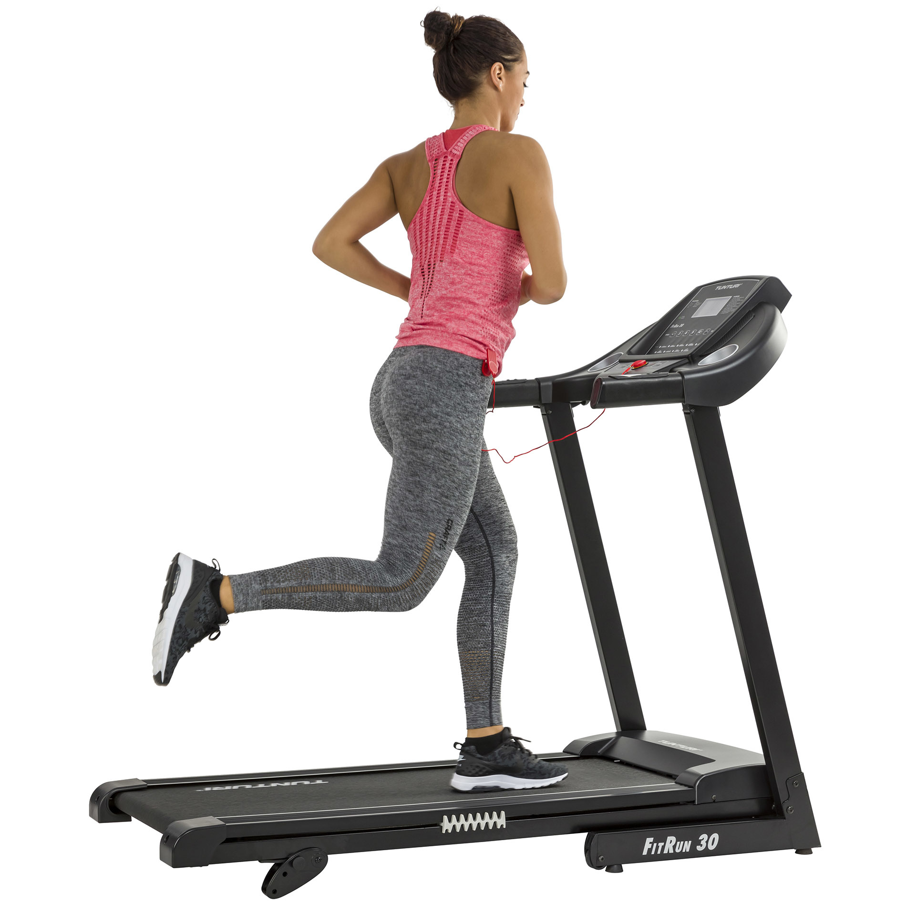
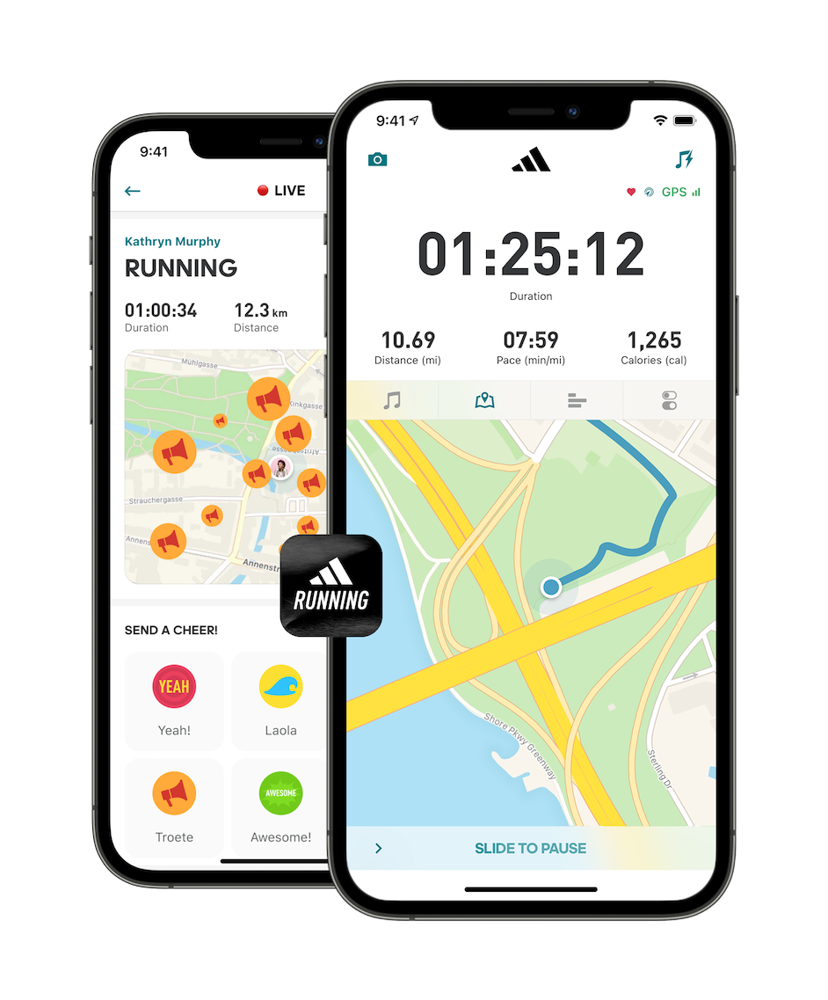

Loopbanden
Loopbanden zijn er voor het hardlopen. Ze staan meestal bij elke sportschool
en je kan ze makkelijk gebruiken.
De moderne loopband heeft allemaal functionaliteiten
en kost circa €499,00. Zelf gebruikte ik vaak de loopband op de sportschool om warm te worden
en mijn conditie te verbeteren.
Het voordeel hiervan is dat je op een tempo blijft
en dus die tempo aanhoudt. Ikzelf loop meestal 12 km/uur wat redelijk snel is.
Topsporters gebruiken de loopbanden vaak om hun conditie en tempo bij te houden.
Alles moet namelijk zo perfect mogelijk en op een gemiddeld tempo.
Meer info? Klik hier

Adidas Run App
Voor het hardlopen zijn er verschillende hardloopapps om je snelheid en tijd bij te houden.
Welke app is dan het handigst om te gebruiken?
De Adidas Runn App die je gratis kan downloaden in de Google Play Store en de
App Store is naar mijn mening het best voor het hardlopen.
Het laat alle belangrijke data voor het hardlopen zien en het is erg gebruiksvriendelijk.
Ik gebruik de app al meer dan drie jaar en heb geen enkel probleem gehad.
Meer info? Klik hier

AppleWatch
Tijdens het hardlopen wil je soepel en zonder moeite je tijd en snelheid bijhouden met een app
zoals Adidas Run App.
Dit kan je natuurlijk met je telefoon doen en het dan in een hardloophoes zetten.
Overigens is dit niet altijd handig en kan dit vaak los komen. Hiervoor is er natuurlijk een oplossing,
de Apple Watch. Met de Apple Watch kan je gemakkelijk hardlopen.
Je tijden en snelheid worden beide
opgemeten en bewaart. Het is licht en het gaat moeilijk van je pols af.
Meer info? Klik hier